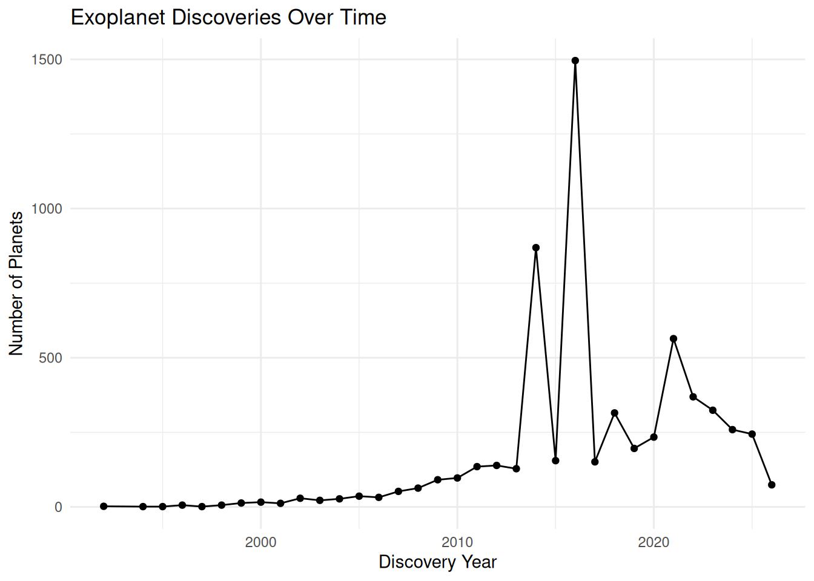

library(DBI)
library(duckdb)
library(readr)
library(tidyverse)SQL Project
NOTE: This project was completed jointly with Daisy (Nga) Nguyen. This page highlights the overall database setup we did together and my individual sections of the project.
Overview
For this project, my partner and I designed and queried a relational database using data from NASA’s Exoplanet Archive. The goal of the project was to examine patterns in exoplanet discoveries, including how discovery methods have changed over time and which methods are responsible for the largest number of confirmed exoplanet discoveries.
The project involved cleaning CSV files, importing them into a DuckDB database, designing simplified relational tables, writing SQL queries, and creating visualizations in R.
Load Packages and Connect to Database
# Create a DuckDB database connection.
# This allows SQL queries to be run inside the Quarto document.
con_nasa <- dbConnect(duckdb::duckdb(), dbdir = "nasa_db")Accessing and Cleaning the Data
# Read in the original CSV files.
# The comment = "#" argument skips metadata/comment lines at the top of the files.
planet_data <- readr::read_csv("planet_data.csv", comment = "#")
planet_discovery <- readr::read_csv("planet_discovery.csv", comment = "#")
star_data <- readr::read_csv("star_data.csv", comment = "#")
# Save cleaned versions of the datasets so they can be imported into DuckDB.
readr::write_csv(planet_data, "planet_data_clean.csv")
readr::write_csv(planet_discovery, "planet_discovery_clean.csv")
readr::write_csv(star_data, "star_data_clean.csv")Importing the Data into SQL
-- Drop old versions of the tables if they already exist.
-- This makes the document reproducible if it is rendered multiple times.
DROP TABLE IF EXISTS planet_data;
DROP TABLE IF EXISTS planet_discovery;
DROP TABLE IF EXISTS star_data;-- Create a table containing planet names, host stars, and orbital periods.
CREATE TABLE planet_data (
pl_name VARCHAR(255),
hostname VARCHAR(255),
pl_orbper DOUBLE
);-- Import the cleaned planet data CSV into the SQL table.
COPY planet_data
FROM 'planet_data_clean.csv'
(FORMAT CSV, HEADER, NULL 'NA');-- Create a table containing planet discovery methods and discovery years.
CREATE TABLE planet_discovery (
pl_name VARCHAR(255),
discoverymethod VARCHAR(255),
disc_year INTEGER
);-- Import the cleaned discovery data CSV into the SQL table.
COPY planet_discovery
FROM 'planet_discovery_clean.csv'
(FORMAT CSV, HEADER, NULL 'NA');-- Create a table containing host star characteristics.
CREATE TABLE star_data (
hostname VARCHAR(255),
sy_pnum INTEGER,
st_rad DOUBLE,
st_mass DOUBLE
);-- Import the cleaned star data CSV into the SQL table.
COPY star_data
FROM 'star_data_clean.csv'
(FORMAT CSV, HEADER, NULL 'NA');Database Design
The original NASA Exoplanet Archive data contained repeated measurements for some planets and host stars. To create cleaner tables for analysis, I grouped observations by planet name and host star, then summarized repeated measurements using averages or maximum values where appropriate.
-- Create a cleaned planets table.
-- Some planets appear more than once in the original data, so this table
-- groups by planet and host star and uses the average orbital period.
CREATE OR REPLACE TABLE planets AS
SELECT
pl_name,
hostname,
AVG(pl_orbper) AS pl_orbper
FROM planet_data
WHERE pl_orbper IS NOT NULL
GROUP BY pl_name, hostname
ORDER BY pl_name;-- Create a cleaned discoveries table.
-- DISTINCT removes duplicate rows, while the WHERE clause keeps only
-- planets with a recorded discovery year.
CREATE OR REPLACE TABLE discoveries AS
SELECT DISTINCT
pl_name,
discoverymethod,
disc_year
FROM planet_discovery
WHERE disc_year IS NOT NULL
ORDER BY pl_name;-- Create a cleaned stars table.
-- MAX(sy_pnum) keeps the maximum reported number of planets for each host star.
-- AVG(st_rad) and AVG(st_mass) take averages for repeated measurements of
-- stellar radius and mass
CREATE OR REPLACE TABLE stars AS
SELECT
hostname,
MAX(sy_pnum) AS sy_pnum,
AVG(st_rad) AS st_rad,
AVG(st_mass) AS st_mass
FROM star_data
GROUP BY hostname
ORDER BY hostname;-- Check that the cleaned tables were created successfully.
SHOW TABLES;| name |
|---|
| discoveries |
| planet_data |
| planet_discovery |
| planets |
| star_data |
| stars |
Examining Planet Discovery Patterns
In this section, I examined patterns in exoplanet discoveries and discovery methods over time.
Query 1
-- Count the number of planets discovered by each discovery method.
-- This helps identify which methods account for the most confirmed discoveries.
SELECT discoverymethod, COUNT(*) AS n_planets
FROM discoveries
GROUP BY discoverymethod
ORDER BY n_planets DESC;| discoverymethod | n_planets |
|---|---|
| Transit | 4522 |
| Radial Velocity | 1180 |
| Microlensing | 278 |
| Imaging | 96 |
| Transit Timing Variations | 40 |
| Eclipse Timing Variations | 17 |
| Orbital Brightness Modulation | 9 |
| Pulsar Timing | 8 |
| Astrometry | 6 |
| Pulsation Timing Variations | 2 |
The transit and radial velocity methods were responsible for the majority of planet discoveries. The transit method involves detecting changes in a star’s brightness when a planet passes in front of it, while the radial velocity method detects small movements in a star caused by the gravitational pull of orbiting planets.
Query 2
-- Count the number of planets discovered in each year.
SELECT disc_year, COUNT(*) AS n_planets
FROM discoveries
GROUP BY disc_year
ORDER BY disc_year;| disc_year | n_planets |
|---|---|
| 1992 | 2 |
| 1994 | 1 |
| 1995 | 1 |
| 1996 | 6 |
| 1997 | 1 |
| 1998 | 6 |
| 1999 | 13 |
| 2000 | 16 |
| 2001 | 12 |
| 2002 | 29 |
The query shows examines exoplanet discovery amounts changed over time per year, beginning with the first confirmed discoveries in the early 1990s. It is saved as a dataframe df1 for the visualization below.
Query 3
-- Join the planets and discoveries tables to compare average orbital period
-- by discovery method.
-- HAVING COUNT(*) >= 5 removes discovery methods with very small sample sizes.
SELECT d.discoverymethod,
AVG(p.pl_orbper) AS avg_orbper,
COUNT(*) AS n_planets
FROM planets AS p
JOIN discoveries AS d
ON p.pl_name = d.pl_name
GROUP BY d.discoverymethod
HAVING COUNT(*) >= 5
ORDER BY avg_orbper DESC;| discoverymethod | avg_orbper | n_planets |
|---|---|---|
| Imaging | 1.702837e+07 | 25 |
| Microlensing | 3.971391e+03 | 12 |
| Eclipse Timing Variations | 3.488365e+03 | 17 |
| Radial Velocity | 1.793152e+03 | 1180 |
| Pulsar Timing | 1.475802e+03 | 7 |
| Astrometry | 8.652617e+02 | 6 |
| Transit Timing Variations | 3.407882e+02 | 40 |
| Transit | 2.442367e+01 | 4522 |
| Orbital Brightness Modulation | 1.172688e+00 | 9 |
The output above suggests that planets discovered through imaging tended to have much larger orbital periods on average. In contrast, methods such as orbital brightness modulation detected planets with much shorter average orbital periods.
Query 4
-- Count the number of discovered planets around each host star.
-- The LIMIT statement displays the ten host stars with the most planets.
SELECT hostname, COUNT(*) AS n_planets
FROM planets
GROUP BY hostname
ORDER BY n_planets DESC
LIMIT 10;| hostname | n_planets |
|---|---|
| KOI-351 | 8 |
| TRAPPIST-1 | 7 |
| HD 191939 | 6 |
| HD 34445 | 6 |
| HIP 41378 | 6 |
| Kepler-20 | 6 |
| HD 10180 | 6 |
| Kepler-11 | 6 |
| HD 110067 | 6 |
| K2-138 | 6 |
This table shows that the largest number of discovered exoplanets around a single host star in this database was 8.
Visualization
This visualization shows the number of exoplanets discovered over time.
ggplot(df1, aes(x = disc_year, y = n_planets)) +
geom_line() +
geom_point() +
labs(
title = "Exoplanet Discoveries Over Time",
x = "Discovery Year",
y = "Number of Planets"
) +
theme_minimal()
The visualization highlights several major increases in exoplanet discoveries. These jumps reflect advances in technology and data analysis, including major results from the Kepler telescope and later analysis of Kepler data.
# Close the database connection after all SQL queries are complete.
dbDisconnect(con_nasa, shutdown = TRUE)